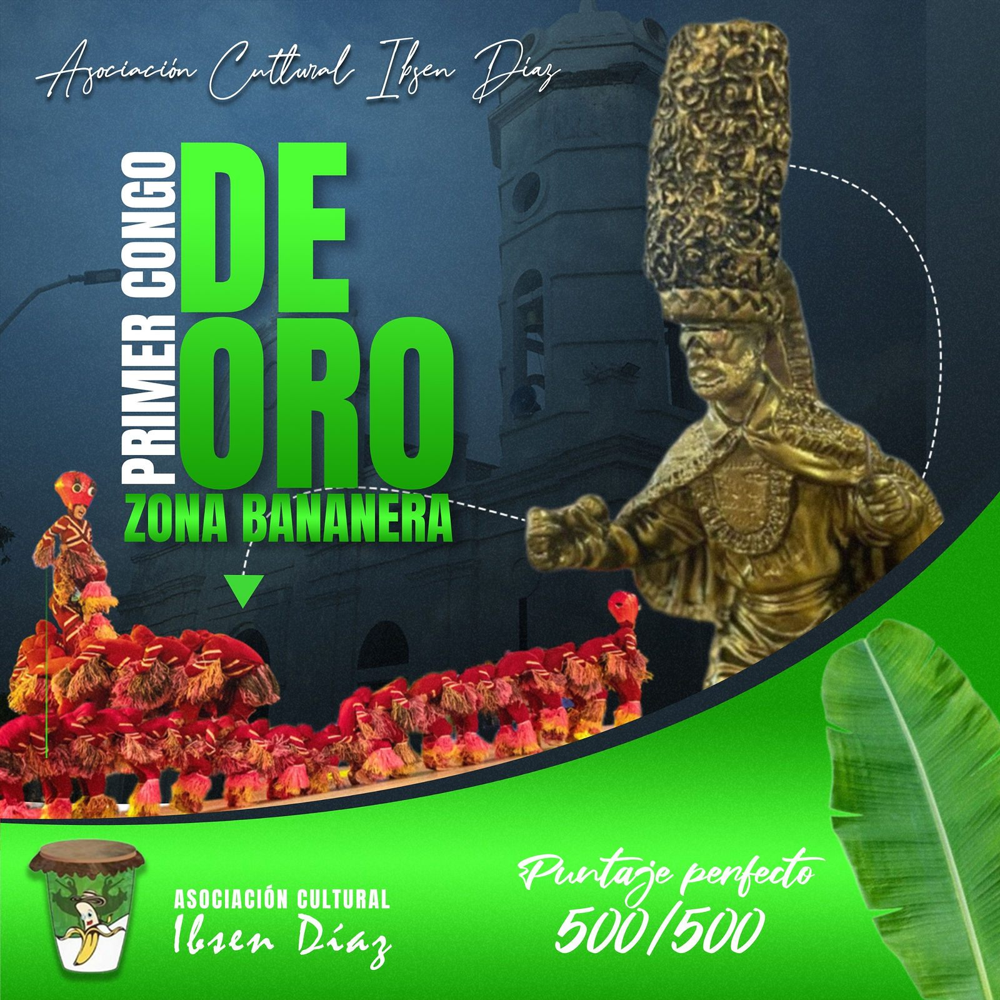
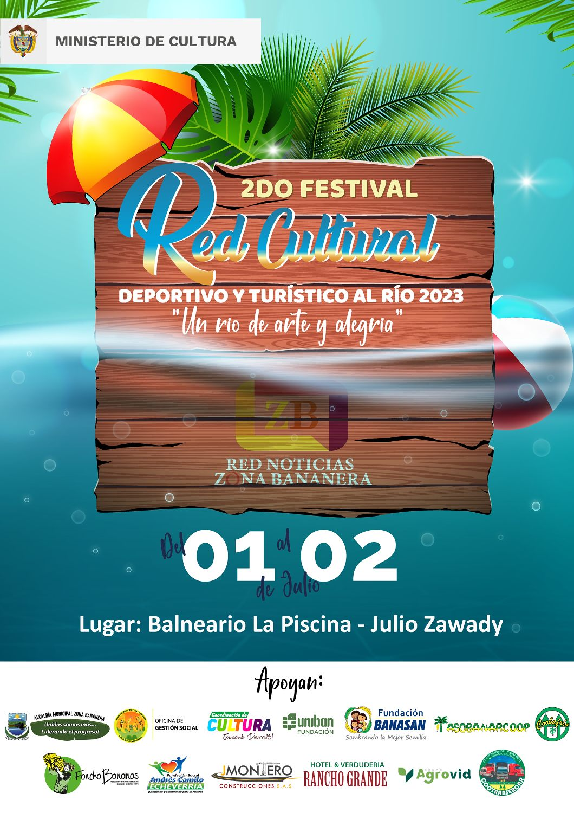
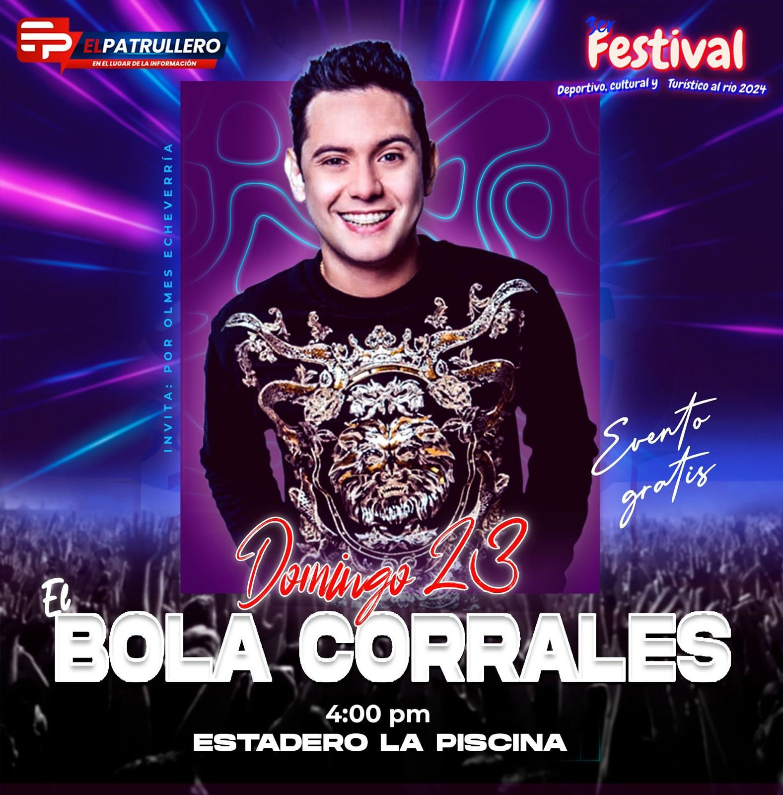
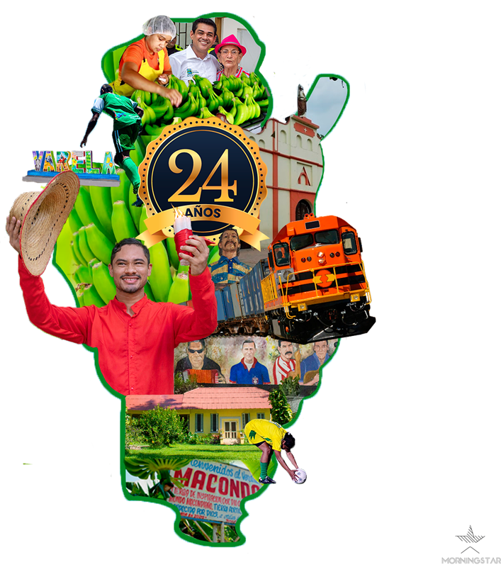
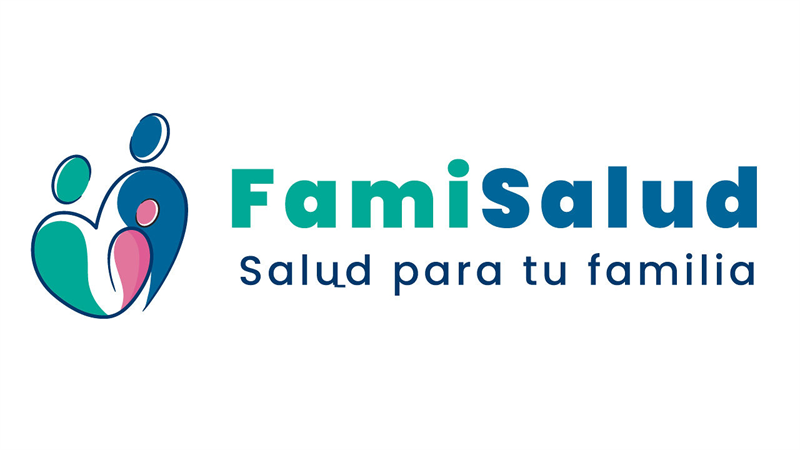
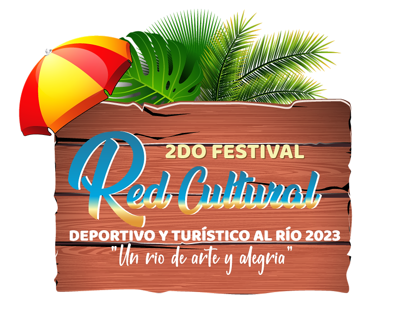

Estrategia de Marca & Branding
Identidades que dejan huella.
Construimos sistemas visuales y estrategias de marca con propósito. Diseñamos identidades que no solo se ven bien, sino que están listas para escalar y conectar con tu audiencia en cualquier mercado.
El proceso
Del concepto a la realidad.
-
01
Diseño de Logotipo
La esencia de tu marca. Creamos símbolos versátiles y atemporales, optimizados para tener un impacto impecable desde el entorno digital hasta la papelería corporativa y gran formato.
-
02
Sistema visual
Coherencia en cada punto de contacto. Definimos paletas cromáticas, tipografías y Directrices que garantizan que tu marca se perciba sólida, profesional y memorable en cualquier canal.
-
03
Branding Estratégico
El núcleo de tu negocio. Más allá del diseño, desarrollamos Denominación, arquitectura de marca y tono de voz para construir una identidad robusta que genere confianza y diferenciación.
Portafolio Seleccionado
Proyectos que hablan por si solos



Logotipos
Marcas que diseñé
Identidades para negocios, instituciones y proyectos culturales del Magdalena.



Conversemos
Sobre tu marca
Tu marca merece destacar. Cuéntanos sobre tu visión y diseñemos una identidad a la altura de tus objetivos. Trabajamos con clientes a nivel local e internacional.
Empezar un proyecto